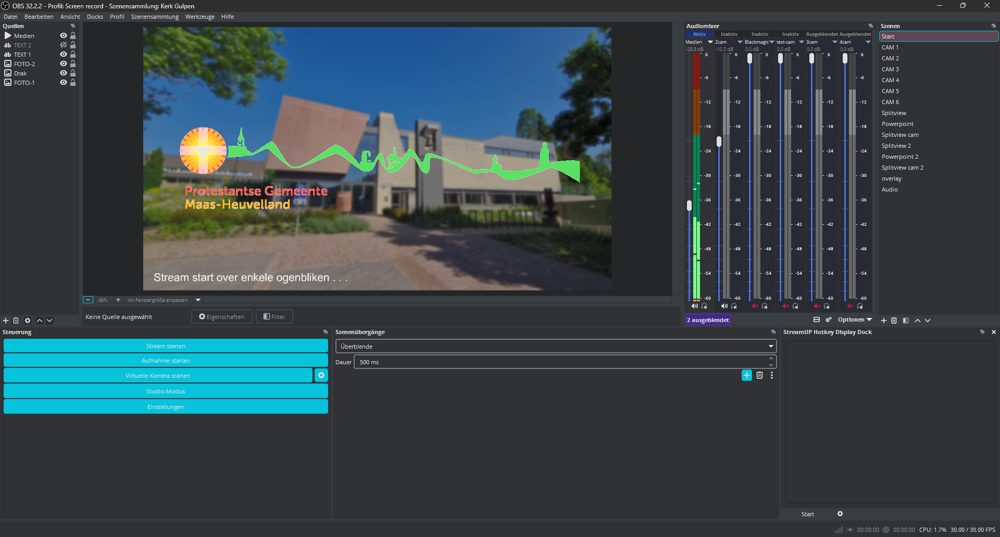

Since 2023, I have served as the Lead Stream Engineer and Camera Operator for Protestantse Gemeente Maas-Heuvelland, delivering broadcast-grade live coverage for the 't Gulperhoes sanctuary in Gulpen.
What began as a modest setup with a single webcam and a Chromebook quickly evolved through a drive to unlock the broadcast's true potential. Recognizing room for innovation, I set out to research, design, and engineer custom systems from the ground up. Over the years, this continuous development transformed our streams into a fully professional, multi-camera operation featuring custom remote audio pipelines, dynamic broadcast graphics, optimized for digital reach.
Today, the broadcast runs on a modern, high-fidelity infrastructure powered by custom WebRTC audio processing, low-latency video routing, and seamless scene transitions. To maintain exact production control during live services, I designed and built custom physical control hardware powered by embedded microcontrollers, bridging hardware control directly with OBS Studio to deliver a polished experience for the online congregation.
When i started, the setup was quite basic, a single webcam and a Chromebook. To make the broadcast actually be watchable, I had to upgrade the hardware and software infrastructure. After a lot of research and experimentation, I landed on using OBS Studio on my personal laptop. It works by ingesting video and audio feeds from various sources and overlaying graphics in real-time, before streaming the footage to the youtube channel of the PGMH.

To upgrade the video system from a single webcam, I had to engineer a system that bypasses the curches wifi protections. Additionally, I had to use phones as cammeras to keep the cost down. At first I used the Droidcam to stream video from the phones to my laptop. However, I imediately ran into issues, as the curch wifi blocked the pier to pier connection that Droidcam uses. After a lot of research, I found out that the best way to stream video from the phones to my laptop was to use the WebRTC system within Videoninja. To make the system easy and fast, I made custom Videoninja links that optimize the streaming quality and keep latency low. This way, I could bypass the curch wifi protections and get a stable video feed from a system based on phones.
text
text
Contact
Marwin Koster
marwin.n.koster+contact@gmail.com
Streaming Gulpen / Vaals
marwin.n.koster+youtube@gmail.com
Youtube channel PGMH
pgmh.heuvelland+youtube@gmail.com
PGMH Youtube